Cazena Documentation
Welcome to the documentation for the Cazena web console. To learn more about Cazena’s Fully-Managed Big Data As a Service, visit www.cazena.com.
Cazena’s Fully-Managed Big Data as a Service
Cazena’s Fully-Managed Big Data as a Service enables enterprises to securely migrate, store and analyze their data in the cloud. Cazena manages the creation, configuration, security setup, and management of cloud infrastructure to create a single-tenant datacloud. Cazena then continually monitors and manages this platform ensuring that it is secure and optimized for your current set of workloads.
In addition to data engines and cloud storage, Cazena’s solution includes the following components:
-
Cazena Gateways provide a secure connection between the enterprise and the Cazena private datacloud (PDC).
-
Cloud Sockets expose Cazena services on your local network, providing access to web interfaces and APIs. On-premises analytics and BI tools connect to the Cazena datacloud via cloud sockets.
-
The AppCloud allows you to deploy any tool (e.g., analytics, machine learning, or proprietary algorithms), with secure access to data in the cloud.
This documentation covers tasks that can be done from the Cazena web console. These tasks are listed in the table of contents navigation on the left side of this screen.
Connect to Datacloud Services Via Cloud Sockets
The Cloud Sockets tab displays the URLs, hostnames and ports needed to connect to various services exposed on the Cazena Gateway. This tab also displays the status (Good Health, Warning, or Critical) of preconfigured services. Click on any service on the left side of the screen to view connection details for that service.
In this section, we review examples of how to use cloud sockets to make the following kinds of connections:
- Kafka and Zookeeper
- Connect to Hive or Impala with the RStudio Connections Pane
- Connect to Hive or Impala via RJDBC using RStudio
- Connect to Hive using beeline
- Connect to Impala using the Impala shell
- SparkR in RStudio Server
For examples of using cloud sockets for moving data, see the Move Data section.
Kafka and Zookeeper
Depending on the Cazena configuration at your site, you may have access to a Kafka cluster.
- This type of cluster requires a site-to-site configuration for the Cazena gateway.
- Endpoints are TLS and require Kerberos authentication.
Step 1: Kerberos setup
- The Kafka service is Kerberos-enabled as well as TLS-enabled. You will need to obtain the appropriate credentials prior to any actions. The following is an example file that holds authentication details. In this example, the file is called
client.properties.
sasl.kerberos.service.name = kafka
sasl.mechanism = GSSAPI
security.protocol = SASL_SSL
sasl.jaas.config=com.sun.security.auth.module.Krb5LoginModule required \
useTicketCache=true;
- Obtain a Kerberos ticket. To do this interactively on the command line you can run
kinit <username>and provide your password when prompted.
Step 2: Broker / Zookeeper strings
- In the Cazena console, select the Cloud Sockets tab.
- On the left side of the screen, select one of the Kafka cloud sockets:
- Kafka Broker for producers or consumers
- Kafka Zookeeper for topics
- Use the strings on the right side of the screen to create commands as follows:
Producer
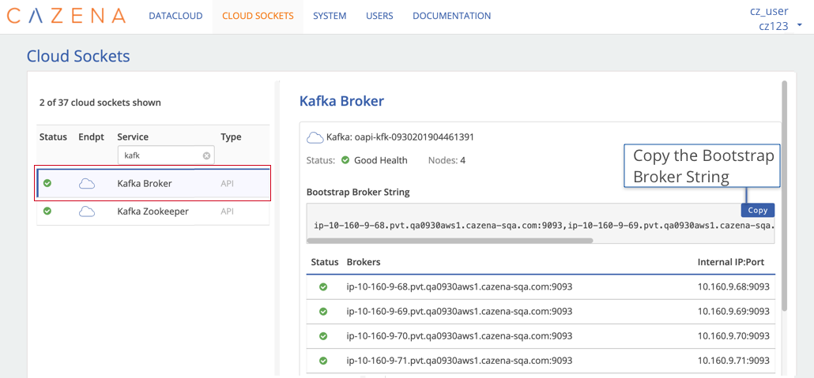
kafka-console-producer --broker-list BoostrapBrokerString --topic yourtopic --producer.config client.properties
- Replace BootstrapBrokerString with the string copied from the Kafka Broker cloud socket page.
- Replace client.properties with the name of the file that you created in step 1.
- Replace yourtopic with your kafka topic.
Consumer
kafka-console-consumer --bootstrap-server BoostrapBrokerString --topic yourtopic --from-beginning --consumer.config client.properties
- Replace BootstrapBrokerString with the string copied from the Kafka Broker cloud socket page.
- Replace client.properties with the name of the file that you created in step 1.
- Replace yourtopic with your kafka topic.
Topic

kafka-topics --create --zookeeper ZookeeperConnectString --replication-factor 1 --partitions 1 --topic yourtopic
- Replace ZookeeperConnectString with the string copied from the Kafka Zookeeper cloud socket page.
- Replace yourtopic with your kafka topic.
Oozie
Email service
Oozie workflows allow email actions to inform users of workflow status. To optimize the delivery of these emails, please supply Cazena support with:
- The details of your enterprise SMTP service
- A From: email address. This allows status emails to originate with a known email address, so that emails are not filtered to spam folders.
If the Enterprise SMTP is not used, then the Cazena service will default to a built-in SMTP service. This component is not designed for high volumes of email, and can therefore cannot guarantee delivery of large number of messages.
Connect to Hive or Impala With the RStudio Connections Pane
In this section, we review how to connect to Hive or Impala using the RStudio Connections Pane. We use Hive in this example; however, you can follow similar steps to connect to Impala.
Step 1: Connect to the RStudio web interface
- Select the Cloud Sockets tab.
- On the left side of the screen, click on RStudio Server. You may use the text filter at the top of the list to help you find the service.
- Click on the Cazena DNS link.
-
RStudio will open in a new tab. Sign in using your Cazena credentials.
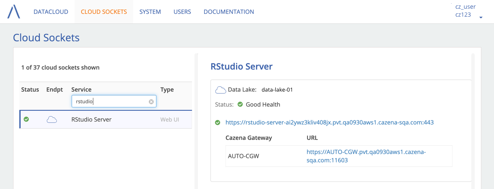
-
In RStudio, open the Connections Pane by selecting the Connections tab, then New Connection.
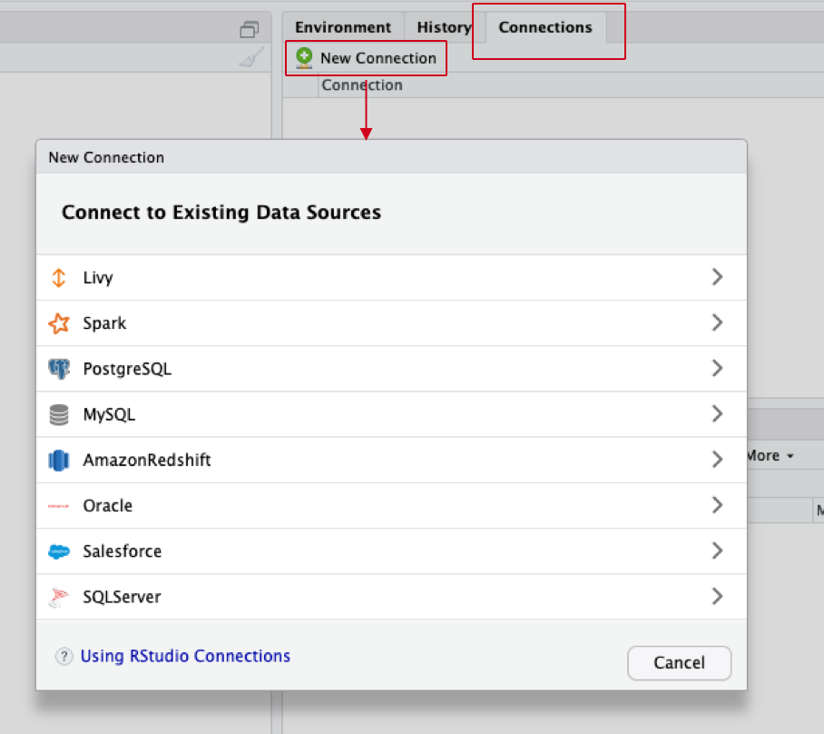
- Scroll down and select Hive (or Impala) from the options.
Step 2: Add the Hostname and Port to the Connection Pane
- In the Cazena console, on the Cloud Sockets tab, select Hive (or Impala) on the left side of the screen.
- Copy the Cazena DNS address and port from the top of of the screen, then paste them into the Connection Pane in RStudio.
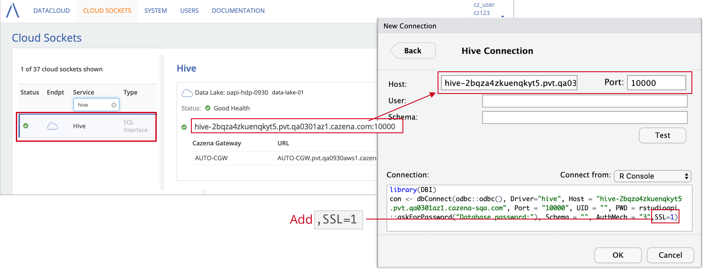
Connect to Hive or Impala via RJDBC using RStudio
In this section, we review how to connect to Hive or Impala via RJDBC. We use Hive in this example; however, you can follow similar steps to connect to Impala.
Location of Hadoop JARs
In order to use Hive with RStudio, you will need to access Hadoop JARs. The JARs are located in the standard install locations that are used by Cloudera:
HADOOP_HOME=/opt/cloudera/parcels/CDH/lib/hadoop
HIVE_HOME=/opt/cloudera/parcels/CDH/lib/hive
Note: Cloudera’s standard install locations are different from the locations used by open source Hadoop (/usr/lib/hadoop/lib/ and /usr/lib/hive/lib/, respectively).
This example shows how you would set up RStudio to connect to Hive via RJDBC.
Step 1: Set up the Hive environment in RStudio
-
Follow the instructions for connecting to the RStudio web interface through your browser.
-
From RStudio, load the RJDBC library.
> library(RJDBC) -
Load the Hive driver.
> hd <- JDBC('org.apache.hive.jdbc.HiveDriver', '/opt/cloudera/parcels/CDH/lib/hive/lib/hive-jdbc.jar') -
Add HADOOP_HOME and HIVE_HOME to the class path.
> for(l in list.files('/opt/cloudera/parcels/CDH/lib/hadoop/')){ .jaddClassPath(paste('/opt/cloudera/parcels/CDH/lib/hadoop/',l,sep=''))} > for(l in list.files('/opt/cloudera/parcels/CDH/lib/hive/lib/')){ .jaddClassPath(paste('/opt/cloudera/parcels/CDH/lib/hive/lib/',l,sep=''))}
Step 2: Get the Hive host address and port from the Cazena console
- On the Cloud Sockets tab, select Hive on the left side of the screen.
-
Copy the Cazena DNS address and port.
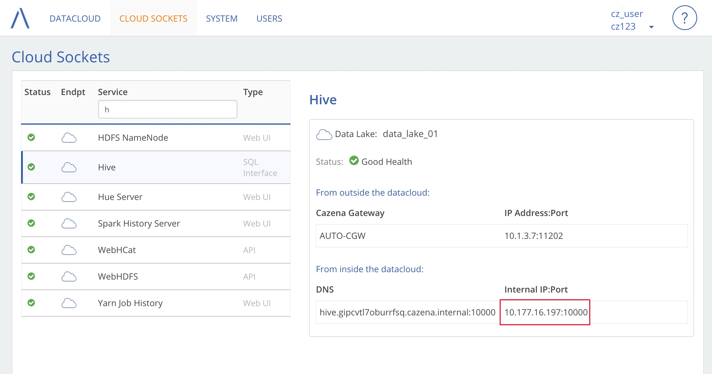
-
Connect to your database using the Hive (or Impala) hostname and port in this command:
jdbc:hive2://<HIVE-HOST>:<HIVE-PORT>/<DATABASE>;ssl=trueFor example:
> c <- dbConnect(hd,'jdbc:hive2://hive-ai2ywz3kliv408jx.pvt.qa0930aws1.cazena-sqa.com:10000/my_database; ssl=true;','my_username', 'my_password')
Connect to Hive using beeline
-
Follow the instructions to find the Hive host address and port from the Cazena console.
-
Copy the host and port into the following string:
!connect jdbc:hive2://<HIVE-HOST>:<HIVE-PORT>/<DATABASE>;ssl=trueFor example:
beeline> !connect jdbc:hive2://hive-ysewsr7iqy8qm6eb.qa0213aws2.pvt.cazena-sqa.com:10000/my_database;ssl=true
Connect to Impala using the Impala Shell
Step 1: Copy the Hostname and Port for Impala
- On the Cloud Sockets tab, select Impala on the left side of the screen.
-
Copy the DNS address and port.
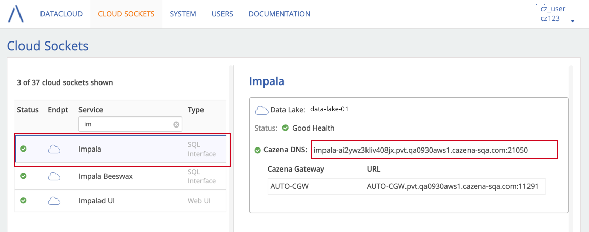
Step 2: Connect to the Impala Shell
Paste the DNS address and port into the following command:
impala-shell -i <IMPALA-HOST>:<IMPALA-PORT> -–ssl
For example:
impala-shell -i impala.5631b377b0cc20e.pvt.cazena-sqa.com:21050 --ssl
SparkR in RStudio Server
Within a Cazena data lake, you can use SparkR from any R shell, including a Hue notebook or RStudio Server.
Step 1: Connect to RStudio Server Through Your Browser:
Follow the instructions to connect to RStudio through your browser.
Step 2: Run Sample Code
From the RStudio web client or a Hue notebook:
-
Load SparkR and the magrittr library.
library(SparkR) library(magrittr) -
Create a SparkContext
sc <- SparkR::sparkR.init(master = "yarn-client") -
Initialize the SQL context, which loads the required Hive libraries.
hiveContext <- sparkRHive.init(sc) df <- table(hiveContext, 'db1.nycflights')
Object Store
Depending on the configuration of your environment, data may be stored on Microsoft ADLS or AWS object storage.
ADLS
You may be able to link to two pages in Azure Monitor from the Cazena console.
-
The ADLS Data Explorer allows you to browse through your ADLS directory.
-
The ADLS Metrics Overview displays metrics such as data storage utilization, read/write requests, and ingress/egress.
You may also view ADLS account information including IDs and instance names in the Cazena console.
Link to Azure Monitor from the Cazena console
You must initiate sessions with Azure Monitor by linking from the Cazena console.
-
From the Cloud Sockets tab, select either ADLS Metrics Overview or ADLS Data Explorer on the left side.
-
Links to the Metrics Overview and Data Explorer will appear on the right side of the screen.
-
Sign in to ADLS as the Customer Access User. If you see a message in ADLS that tells you that you don’t have access to the Metrics Overview, check that you are signed in as the Customer Access User, and not into your own Microsoft account.
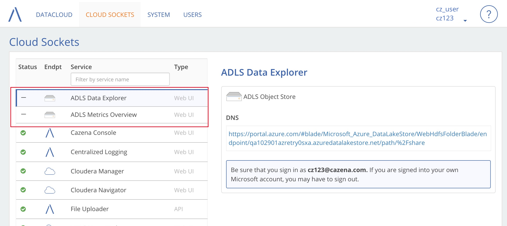
Note: At the top of the ADLS Metrics Overview, there is a link labeled Data Explorer. The link leads to an inaccessible directory. Use the links provided in the Cazena console to link to the data explorer. 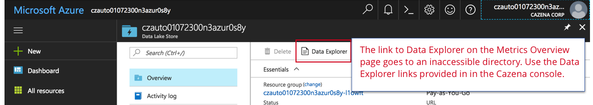
View ADLS IDs and Instance Name
To view variables such as tenant ID, client ID and ADLS Instance name, select the System tab, then ADLS. Links to ADLS Metrics Overview and ADLS Data Explorer are also available on this page.
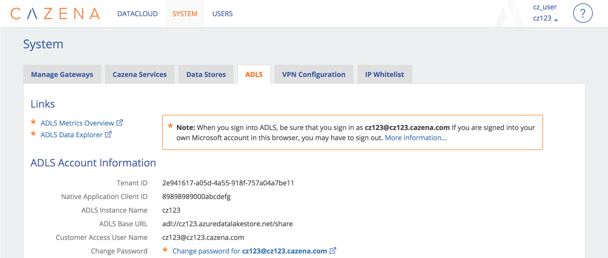
See the section on Moving Data to ADLS Using WebHDFS for an example of how to use these variables.
AWS S3
From the Cazena console, you may link to the AWS S3 console and view keys and tokens that can be used to access the bucket.
Link to AWS bucket from the Cazena console
To link to the AWS S3 console:
-
From the Cloud Sockets tab, select AWS S3 Console on the left side of the screen.
-
A link to the AWS bucket will appear on the right side. Sessions that you initial from this link will expire after 12 hours.
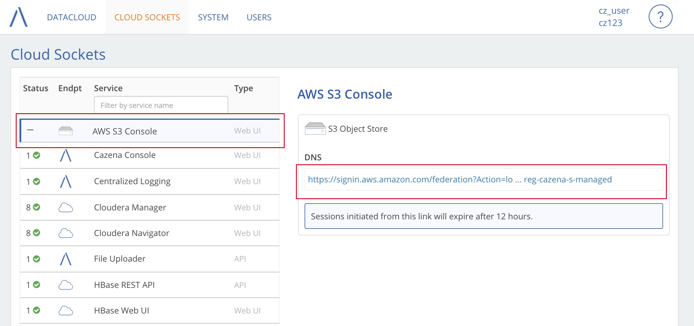
View AWS Keys and Token
To view the bucket name, AWS access key, secret access key and session token, select the System tab, then S3. The AWS S3 link is also available on this page.

Note: Keys and tokens will expire after 12 hours.
Cazena Gateways
Overview
There are two ways to securely connect to the Cazena service. Both methods allows Cazena customers to access the private cloud sockets in the Cazena service within their private corporate networks.
Site-to-Site
A site-to-site connection establishes an IPSec connection between your enterprise and the Cazena service.
Cazena supports BGP, which allows HA connections to the Cazena Service. The Cazena service will be provisioned in a CIDR range, which will be confirmed to not overlap with any existing CIDRs used for the enterprise network. This configuration allows full access to services exposed by the Cazena service. A subset of services are only available with site-to site configurations, including:
- Kafka
- Cazena Internal DNS
After the site-to-site connection has been established, a DNS forwarding rule must be added to your enterprise DNS to allow resolution of Cazena FQDNs.
Cazena support will provide you with the correct rule sets, depending on whether you have a routing or policy-based firewall. If your enterprise does not support BGP, Cazena can support static routes. However, this will prevent a HA connection, resulting in longer outages during maintenance periods.
Cazena Gateway
The Cazena Gateway is a software device that is packaged as a OVA, which is typically deployed within your DMZ. It manages secure connections between the datacloud and on-premises environments, allowing access to cloud sockets via a port forwarding mechanism.
This is a simpler networking configuration than site-to-site connections, and requires minimal networking configuration within the enterprise. There are a few Cazena services that are not available with this connection, including Kafka and Cazena Internal DNS. This is a simpler networking configuration than site-to-site connections, and requires minimal networking configuration within the enterprise. There are a few Cazena services that are not available with this connection, including Kafka and Cazena Internal DNS.
Cazena Gateways that use the port forwarding configuration can be managed using the Cazena console. The rest of this section describes the following:
- Install a new Cazena gateway
- Create custom cloud sockets
- Activate and update ports
- Troubleshooting
- Stop and delete a Cazena gateway
Install a New Cazena Gateway
If your site is using Cazena gateways configured with port forwarding, you can install a new Cazena gateway. You will download an OVA file and then install it on a virtual machine in the enterprise data center.
Requirements
VMWare
Currently the OVA is supported on VMware systems.
- VMware Fusion/Player 4.0 or later
- Workstation 8.0 or later
- vSphere/ESXi 5.0 to 6.0. VMware vSphere/ESXi 6.5 has deprecated its support for OVAs. If you use vSphere/ESXi 6.5, you will have to manually untar the file. Instructions are in the next section.
Hardware
- 4 virtual CPU cores
- 2.0 GB free memory (4.0 GB recommended)
- 25 GB free disk space
Connectivity
- JDBC/IP connectivity to enterprise database servers
- Outbound Internet connectivity on ports TCP 443 (TLS/SSL), UDP 500 (ISAKMP/IKE), UDP 4500 (IPsec NAT-T), UDP 123 (NTP)
To install a Cazena gateway:
The steps for installing a Cazena gateway are described in detail in the following sections.
- Download and import the Cazena gateway .ova file.
- Install the Cazena gateway.
- Run
cgw-auto-startto connect the gateway to your datacloud. - Create an A record in the enterprise DNS
Step 1: Download and Import the Cazena Gateway .ova file
- Sign into the Cazena support site at support.cazena.com
- Under Cazena Support, click on Downloads.
- Click on the Cazena Gateway link to download the .ova file.
If you are using vSphere/ESXi 6.5
VMware vSphere/ESXi 6.5 and later has deprecated its support for OVAs. Untar the OVA file to extract the OVF and VMDK files. You will not need the MF file.
$ tar -xvf "CazenaGateway.ova"
x CazenaGateway.ovf
x CazenaGateway.mf
x CazenaGateway-disk1.vmdk
-
Import the CazenaGateway.ova file.
Client Instructions VMWare Fusion - Choose File > Import...
- Select the CGW OVA file.
Virtual Machine Manager - Choose Add > Import...
- Select the CGW OVA file.
vSphere/ESXi Web client - Choose Navigator -> Virtual Machines -> Create/Register VM...
- Select Deploy a virtual machine from an OVF or OVA file
- Enter a name
- Select file(s)
- 5.0 to 6.0: Add the OVA
- 6.5 or later: Add the OVF and VMDK files
(See instructions for untarring the OVA file.)
Important: After the import has finished, open the VM’s network settings and make sure the network adapter is set to ‘bridged mode’. This will allow the CGW ethernet primary interface (eth0) to have an enterprise reachable IP address, so that it will be exposed to enterprise users.
Step 2: Install the Cazena Gateway Certificate
- Start the Cazena VM and sign into the gateway:
- username:
cazena - password:
cazena
- username:
-
Copy the Client Authentication Certificate that was emailed to you to the Cazena gateway.
- Option 1: Use
scpas in this example:$ scp cazena.pem cazena@u.v.w.x:~ - Option 2: Copy and paste the contents of the
cazena.pemfile into a new file on the Cazena gateway
- Option 1: Use
-
Install the certificate.
$ cgw-install-cert cazena.pem
Step 3: Run cgw-auto-start to Connect the Cazena Gateway to Your Datacloud
-
From a terminal window, use the IP address of the VM to connect to the Cazena gateway.
Example:
$ ssh cazena@w.x.y.z -
Change the gateway’s default password.
$ sudo passwd -
If you haven’t already, set up a dedicated user account with system administrator privileges for the Cazena gateway. (See Instructions for setting up a user account.)
cgw-auto-start -t ipsec-crt -s security-gateway-dns-name -u cgw-user-username -p cgw-user-password -n cgw-name -k client-certificate-password -w
where:
-
security-gateway-dns-nameis the DNS name of the security gateway, available in email from Cazena support or in the Cazena console. -
cgw-user-usernameandcgw-user-passwordare the username and password of the dedicated gateway user. This may have been emailed to you by Cazena support. -
cgw-nameis a unique name for the Cazena gateway. The name may containA-Z,a-z,0-9and-. -
client-certificate-passwordis the certificate password that was emailed to you.
Example
cgw-auto-start -t ipsec-crt -s portal.partner.cazena.com -u cazenauser -p password -n mygateway -k clientpassword -w
The system will respond:
Starting up CGW auto restart
run cgw-auto-show or look in /var/log/cazena/cgw-auto.log to determine status
Inside of /var/log/cazena/cgw-auto.log, there are three lines giving the network address information, similar to this:
- PDC network: 10.128.80.0/21
- ENT address: 10.4.132.10
- ENT network: 10.4.132.0/24 10.4.133.0/24 10.4.130.0/23
For PDC DNS, the IP address of the IPA server is found in the file /etc/resolv.conf, similar to this:
- nameserver 10.128.80.48 # by strongswan
Use cgw-auto-show to see the status:
$ cgw-auto-show
Tunnel is up
CGW DMC is up
CGW DMC version matches PDC version
Step 4: Create an A Record in the Enterprise DNS
When the Cazena Gateway is installed, onsite administrators will assign a private IP address to the VM. Because all Cazena endpoints are TLS-enabled, accessing cloud sockets with the IP address will result in security errors. For this reason, all access must use a FQDN that matches the public certificate used for your single-tenant deployment. You must add an A record to your enterprise DNS, to allow the enterprise to refer to the Cazena gateway using an FQDN rather than the IP address.
The A record is a DNS entry of the form:
gateway-name.pvt.customer-hash.cazena.com
where
gateway-nameis the name of your Cazena gateway, as specified incgw-auto-startcustomer-hashis the name of your PDC.
Note: This A record will not prevent you from reaching www.cazena.com. The A record is for the subzone [gateway-name].pvt.[customer-hash].cazena.com.
Custom Cloud Sockets
You can set up cloud sockets with endpoints in any of these components:
-
Data Lake or Data Mart: This type of custom cloud socket could be used, for example, to allow access to a tool such as Flume through a second Cazena gateway port.
-
Enterprise: An enterprise cloud socket could be used, for example, to move data from an enterprise server into the datacloud using Sqoop.
-
AppCloud: The AppCloud allows you to deploy any tool (e.g., analytics, machine learning, or proprietary algorithms), with secure access to data in the cloud. An example use would be to install Streamsets on an App Cloud node, and then create a custom cloud socket that allows access to that endpoint.
Example: Enterprise Cloud Socket
This examples shows how to set up a custom Enterprise cloud socket, which might be used to move data from an enterprise server into the datacloud using Sqoop. Instructions for using Sqoop can be found in the Data Movement section.
- On System > Manage Gateways , select Enterprise on the left side of the screen. If there are multiple Cazena Gateways, make your selection under the gateway that you want to use.
- Click New Cloud Socket.
- Enter a name and (optional) description for the cloud socket.
- Select the the port number and protocol that you want to use for the Cazena Gateway. You may use the same port number with different protocols. For example, you could have two cloud sockets that both use port 11300, with one over TCP and one over UDP.
- In the Endpoint section, enter the IP address and port for the enterprise server.
- Optional: You may enter an additional path to the location on the enterprise server.
- Click Save.
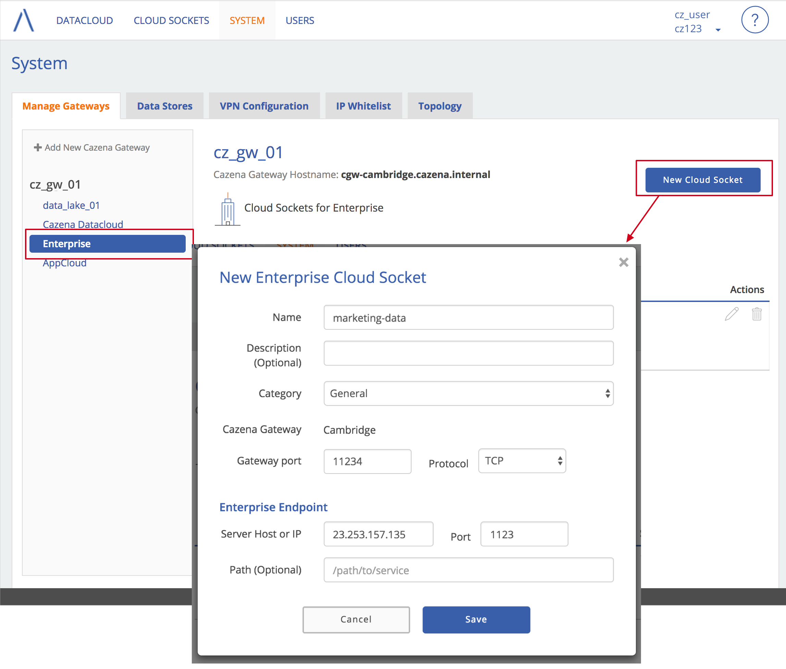
Activate and Update Ports
From the Cazena console, system administrators may specify the ports in the environment that will be used for each service on Cazena gateway(s).
To manage ports, click on the System tab. By default, you will see a list Cazena gateways on the left side of the screen. Under each gateway, you will see each of your data lakes and/or data marts, as well as an option to view enterprise services associated with that gateway.
- Under any Cazena gateway in the list, click on the name of a data lake or data mart, or Enterprise Services.
-
Click on any port number on the right to change its default value.
Note: Port numbers must be in the range 32768 - 60999.
- Use the slider in the Active column to activate or deactivate any port.
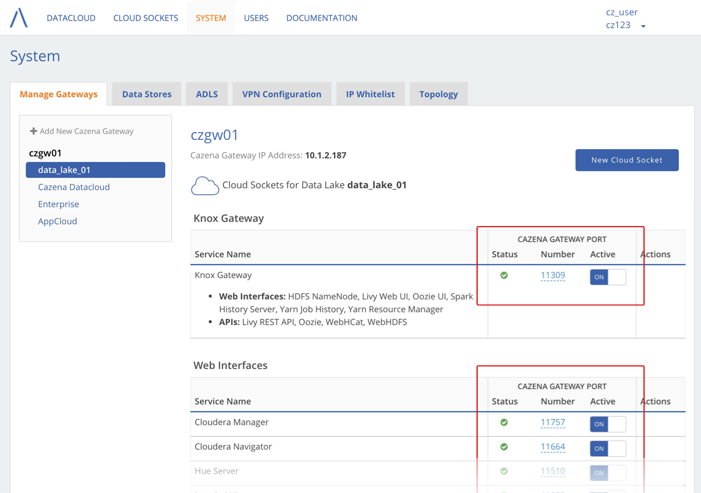
Troubleshooting
Follow these steps if you have run cgw-auto-start and either:
- The Cazena gateway doesn’t appear in the Cazena console.
- You are having trouble moving data.
Check that the Cazena Gateway is Operating Correctly
First, run cgw-auto-show:
$ cgw-auto-show
--Status--
Tunnel is up
Tunnel was started at Mon Jun 11 10:20:40 UTC 2018
Tunnel has been up for 7h:0m:42s
CGW DMC is up
CGW DMC version matches PDC version
CGW was started at Mon Jun 11 10:20:41 UTC 2018
CGW has been up for 7h:0m:41s
--Configuration--
Tunnel type is ipsec
Server is cazena-cz123.eastus2.cloudapp.azure.com
User is cz_user
CGW name is cazena-gw1
Depending on what cgw-auto-show returns, refer to one of these sections:
- Tunnel is down
- CGW DMC is down
- Both the tunnel and CGW DMC are up, but you are having trouble moving data.
If the Tunnel is Down
-
Double-check your cgw-auto-start command.
- Make sure that you are using the correct user name/password.
- Check that the name/password are not being used by someone else.
- Make sure that the secgw name and preshared key (if used) are correct.
If necessary, re-run cgw-auto-start.
-
Check with Cazena support to see if your site has a whitelist of allowed IP addresses. If so, the IP address of the Cazena gateway must be included in the whitelist.
-
Run
cgw-show-ipsec.If the tunnel is up, you should see:
$ cgw-show-ipsec Redirecting to /bin/systemctl status strongswan.service ipsec daemon running Security Associations (2 up, 0 connecting): dm-psk[9]: ESTABLISHED 4 minutes ago, 10.1.3.80[dm-user]...40.70.186.53[rw-psk] dm-psk{24}: INSTALLED, TUNNEL, reqid 1, ESP in UDP SPIs: c111a8c9_i c1b8fff2_o dm-psk{24}: 10.255.252.2/32 === 10.128.8.0/21 dm-psk[8]: ESTABLISHED 50 minutes ago, 10.1.3.80[dm-user]...40.70.186.53[rw-psk] dm-psk{22}: INSTALLED, TUNNEL, reqid 1, ESP in UDP SPIs: c0b0c6ba_i caa3ea03_o dm-psk{22}: 10.255.252.2/32 === 10.128.8.0/21
If CGW DMC is Down
If cgw-auto-show indicates that the tunnel is up but the CGW DMC is down:
-
Check the log files. Open
/var/log/cazena/<gateway-name>.log, replacing<gateway-name>with the name of your gateway.- If you see
Operation timed out after - The CGW DMC software may not have not downloaded successfully. Try increasing the timeout value using the
-moption of the cgw-auto-start command. - If you see WARN or ERROR messages:
- This indicates that CGW DMC is having internal issues. The range of potential issues here are too numerous to list out. Contact support/engineering for help.
- If you see
-
Check that the CGW has the necessary port connectivity by running
cgw-reachable.$ cgw-reachable [DNS-NAME] Checking cloud services reachability... Security Gateway TLS reachable: TRUE AWS S3 reachable: TRUE Azure storage reachable: TRUEIf any of these targets returns FALSE, confirm that the customer firewall is allowing the following ports outbound access from the Cazena gateway.
- TCP 443 (TLS/SSL)
- UDP 500 (ISAKMP/IKE)
- UDP 4500 (IPsec NAT-T)
Trouble with data movement
If you are having trouble moving data, first follow the steps in the previous section to ensure that the Cazena Gateway is operating correctly. Next, you can:
- Check connectivity between the gateway and the datacloud
- Check connections to enterprise services
- Measure latency and throughput
Check Connectivity Between the Cazena Gateway and the Datacloud
-
Run
cgw-show-ipservicesto see whether the CGW is allowing access to the required ports/services within the PDC; for example:[cazena@cgw ~]$ cgw-show-ipservices IpService ID: pdc-kibana (PDC-DNAT rule #4, PDC-FWRD rule #4) target prot opt source destination DNAT tcp -- 0.0.0.0/0 10.4.131.136 tcp dpt:11494 /* id: pdc-kibana, name: kibana */ to:10.128.16.37:5601 ACCEPT all -- 0.0.0.0/0 0.0.0.0/0 ctstate NEW,ESTABLISHED ctproto 6 ctorigdst 10.4.131.136 ctorigdstport 11494 /* id: pdc-kibana, name: kibana */ etc
You can also look on the System tab of the Cazena Console to see whether Cazena gateway ports are active.
Check Connections to Enterprise Services
For Netezza or Oracle:
- Make sure that the needed drivers are present in /home/cazena and are read/executable.
- Netezza: nzjdbc3-7.2.0.0-cazena.jar
- Oracle: ojdbc7-12.1.0.1.0-linux.x64.jar
For Netezza, Oracle or FTP/SFTP:
- Make sure the servers can be reached.
- If you do not have nmap, install it using
sudo yum install nmap. - The following commands should show that the ports are open:
- Netezza:
nmap -p 5480 <NZ IP Address> -Pn - Oracle:
nmap -p 1521<Oracle IP Address> –Pn - FTP:
nmap -p 21 <FTP Server IP> –Pn - SFTP:
nmap -p 22 <SFTP Server IP> –Pn
- Netezza:
- If you do not have nmap, install it using
- Check that the data store contains a valid username and password that can access the database/schema/directory.
Measure Latency and Throughput
If the tunnel and DMC are both up and the IP service connectivity is correct, then there could be an issue with latency or throughput performance. You can use cgw-speed-test.py to test both latency and throughput.
Before You Begin
Connect to the Cazena gateway and get the DNS name for the security gateway.
-
From a terminal window, use the IP address of the VM to connect to the Cazena gateway.
Example:
$ ssh cazena@w.x.y.z -
Run
cgw-auto-showto see the DNS name for your security gateway. The server name is in the section titled Configuration.--Configuration-- Tunnel type is ipsec Server is cz123.eastus2.cloudapp.azure.com User is dm-user CGW name is AUTO-CGW
CLI Arguments
The command line arguments for cgw-speed-test.py can be displayed by using the -h option:
$ scripts/cgw-speed-test.py -h
cgw-test-speed.py -s <secgw name> -c <aws, azure> -l -d -t <duration>
-s secgw name used for VPN connection
-c cloud type (aws/azure)
-l latency tests
-d download tests
-t maximum time to run each test in seconds
-s Required. Specify the DNS name or the IP address of the PDC’s security gateway.
-c Optional; default is both platforms. Specify the cloud platform, either azure or aws.
-l Optional. Run the latency tests.
-d Optional. Run the download tests.
Note: If neither -l or -d are specified, both types of tests will be run.
-t Optional; default value is 30.
-
For latency: The number of tests executed (e.g. 30 TCP handshakes) to determine minimum/maximum/average round trip times.
-
For throughput: The maximum time boundary in seconds for the test to complete.
Network Latency
The network latency test in cge-speed-test.py uses the nping utility for network packet generation, response analysis and response time measurement. All tests use TCP for latency measurement. nping does a full TCP handshake, including both setup and teardown. Latency tests are performed from the CGW to three PDC network interfaces:
- SGW’s public interface: The script tests routes through the public Internet to the PDC’s SSL port (443). Be sure that the port is open on the PDC. If it is not open, N/A is returned for timing values.
- SGW’s private interface: The script tests routes through the VPN. Be sure that the VPN is connected and that the SSH port (22) is open.
- IPA’s private interface: The script tests routes through the VPN. Be sure that the VPN is connected and that the SSH port (22) is open.
Sample latency test
$ scripts/cgw-speed-test.py -s cz123.cazena.com -c aws -l -t 3
------- Parameters --------
name is cz123.cazena.com
cloud is aws
tunnel is True
latency test is True
download test is False
max duration is 3
-----------------------------
Beginning Latency Tests:
SecGW Public IP latency: Max: 2.138ms Min: 2.058ms Avg: 2.096ms
SecGW Private IP latency: Max: 2.485ms Min: 1.860ms Avg: 2.144ms
IPA Private IP latency: Max: 2.785ms Min: 2.188ms Avg: 2.505ms
Complete
Network Throughput
The network throughput test in cgi-speed-test.py uses the wget utility to download files to the Cazena gateway from three sources:
- Data Mover in the PDC
- AWS S3 storage
- Azure blob storage
Sample throughput test
$ scripts/cgw-speed-test.py -s ken0608n6247dev.cazena-dev.com -d -t 3
------- Parameters --------
name is ken0608n6247dev.cazena-dev.com
cloud is both
tunnel is True
latency test is False
download test is True
max duration is 3
-----------------------------
Beginning Download Tests:
Azure Blob Store speed: 20.17 MBps, 161.33 Mbps; size: 60.50 MB
AWS S3 speed: 35.69 MBps, 285.55 Mbps; size: 107.08 MB
CGW Software speed: 35.79 MBps, 286.33 Mbps; size: 107.37 MB
Complete
Stop and Delete a Cazena Gateway
To stop a Cazena gateway:
-
From a terminal window, use the IP address of the VM to connect to the Cazena gateway.
Example:
$ ssh cazena@w.x.y.z -
Use
cgw-auto-stopto stop the gateway:$ cgw-auto-stop Shutting down CGW auto restart -
Use
cgw-auto-showto see the status. If the Cazena gateway has stopped, you will see:$ cgw-auto-show Tunnel is down CGW DMC is down -
You may use cgw-auto-start to restart the gateway.
To delete a Cazena gateway from the console:
- On the System tab, look at the list of Cazena gateways. A trash can icon will appear next to the name of any stopped gateways. Click the icon and confirm that you want to delete the gateway.
Note: If you delete a Cazena gateway, all enterprise cloud sockets and data stores associated with that gateway will also be deleted.
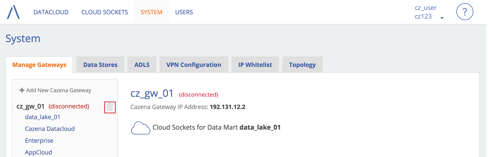
Users and Groups
Cazena support will create a system administrator account. The administrator will receive a welcome email that contains the IP address of the datacloud, a username and instructions for creating a password.
Create User Accounts
For Port Forwarding Configurations
If your site is using a port forwarding configuration, you must have a Cazena gateway running before you can create new user accounts. In addition, the Cazena console must be enabled on that gateway:
- Select System > Manage Gateways.
- On the left side of the screen, select Cazena Datacloud under any running gateway.
- On the right side of the screen, be sure that Cazena Console is active and that the status icon is green, indicating that the port is up .
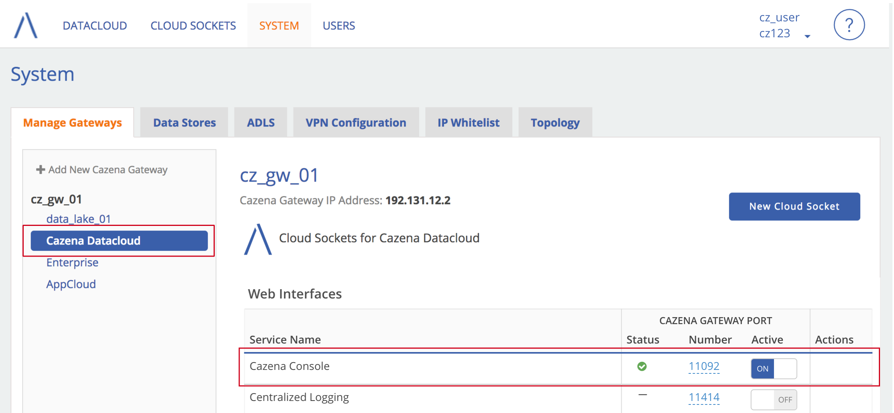
To add a new user:
- From the Users tab, click New User.
- Enter the username and email address for the user.
- Select a role for the user, then click Create.
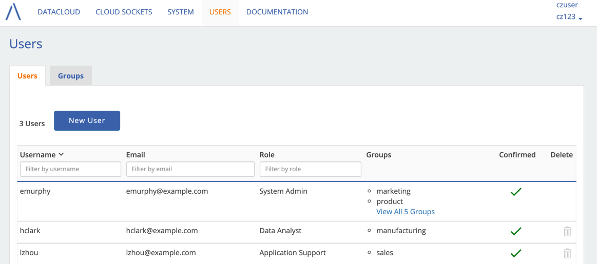
The new user will be sent a welcome email with an initial password and instructions for connecting to the console.
User Roles
For every service that is created, Cazena support will designate an owner, or superuser. The privileges and permissions given to the superuser will depend on the type of data lake or data mart. Contact support@cazena.com for details.
Privileges for the different Cazena user roles are as follows:
| Feature | System Admin | Application Support | Data Analyst |
|---|---|---|---|
| View Cloud Sockets | |||
| Manage Cloud Sockets | |||
| Manage Users and Groups | |||
| View Cazena Gateways | |||
| Manage Cazena Gateways |
Create Groups
Cazena uses IPA authentication with Sentry for role-based authorization to data. You can create IPA groups in the Cazena console to help you manage access to data in a Cazena data lake. When you create and manage groups in the console, the groups will automatically be imported into Hue.
Create Groups
To create a group using the Cazena console:
- Under the Users tab, select the Groups tab.
- Click New Group.
- Enter a name and short description for the group, then click Save.
- After the group is created, the group will be selected on the left side of the screen. To add members, select the Non_Members tab.
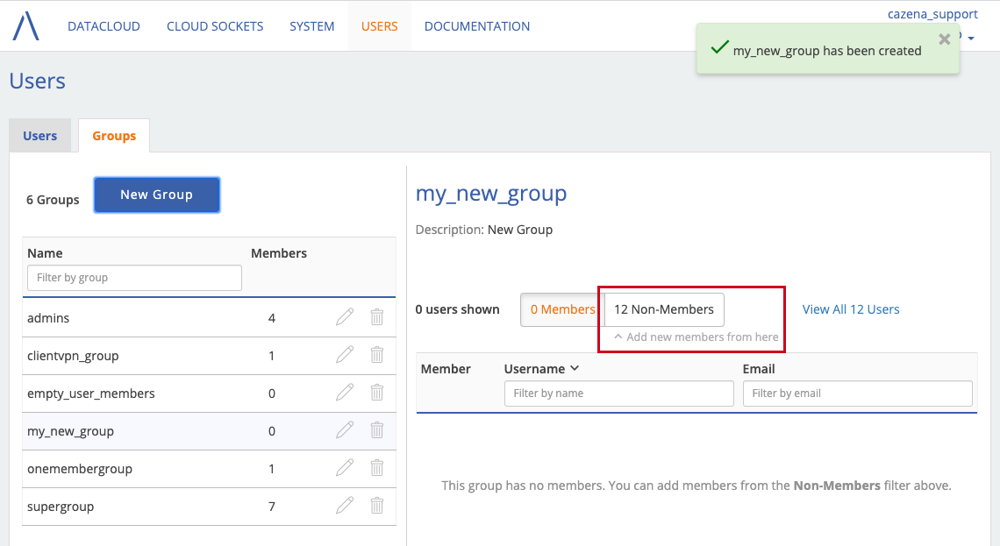
- Use the toggle switches to add new members to the group.
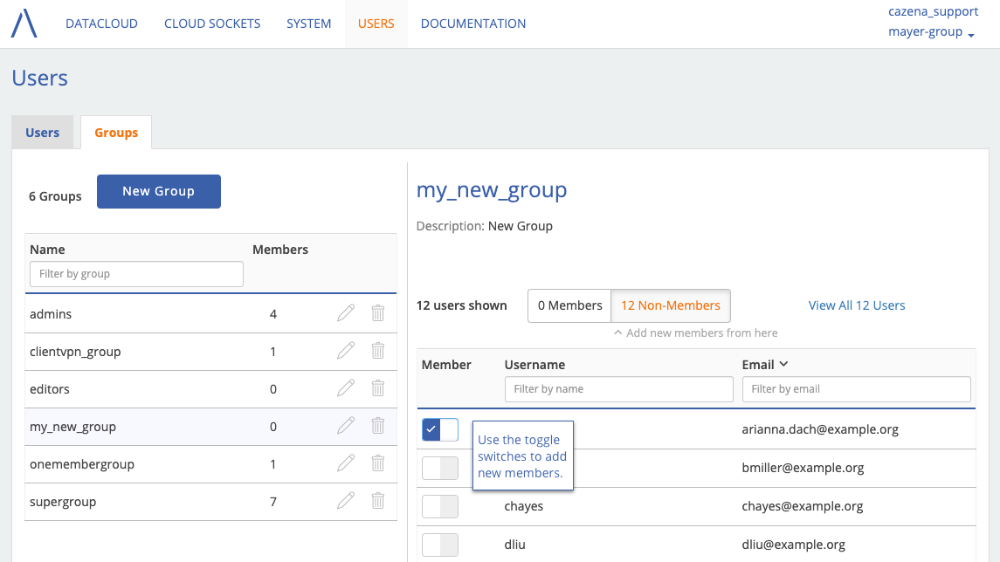
Move Data
The section covers the following types of data movements:
Move to HDFS Using Sqoop
Cazena will install any JDBC drivers that you need to use Sqoop for moving data from the enterprise into the datacloud. At a high level, you’ll follow these steps to move data into the Cazena datacloud using Sqoop:
- Either a system administrator or Cazena support will set up an enterprise cloud socket that contains the information needed to connect to the enterprise resource.
- Use the hostname and port provided by the enterprise cloud socket when you set up a Sqoop job. The example below will show how to use this information in Hue.
Before You Begin
-
You must have an enterprise cloud socket, which contains the information needed to connect to the enterprise resource where the data resides. The cloud socket must be set up by a system administrator or Cazena support.
-
If you are moving data from an Oracle server, the time zone of the data lake must be available to the Oracle database.
Step 1: Get Hostname and Port from the Cazena console
On the Cazena console:
- Select the Cloud Sockets tab. On the left side of the screen, click on the name of the cloud socket you want to use. To search for a particular cloud socket, use your browser’s Find command.
-
The hostname and port will appear on the right side of the screen. Copy the hostname and port.
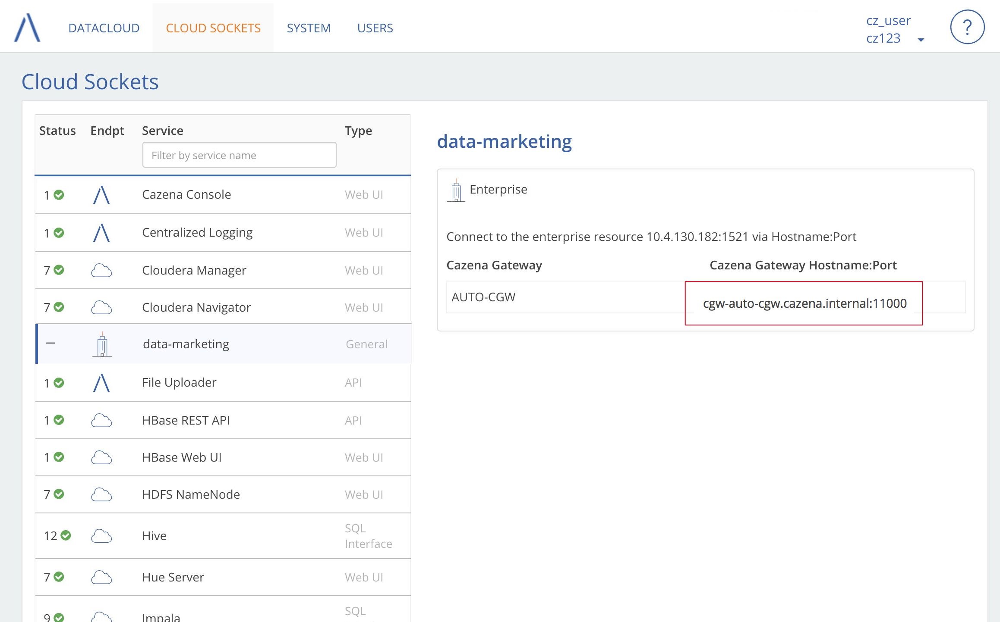
Step 2: Use Hue to Create Connection Links
Connect to Hue
- On the Cloud Sockets tab, select Hue Server on the left side of the screen
- Click on the link on the right side of the screen to open Hue.
- Sign into Hue using your Cazena credentials.
- From the Hue user interface, open the left menu, then select Browsers > Sqoop.
- Click New Job in the upper right corner.
-
In the next step, you will use the hostname and port to create a link for the From link: field.
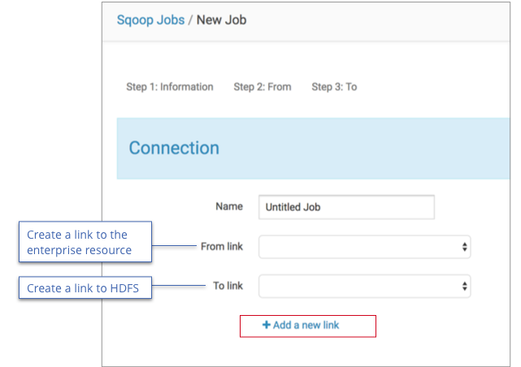
Create a link to the enterprise resource
Use the following information when you create the From link: for a Sqoop job.
- For Connector, select
generic-jdbc-connector. - For JDBC Driver Class, enter one of the following:
- Oracle:
oracle.jdbc.OracleDriver - Netezza:
org.netezza.Driver - PostgreSQL:
org.postgresql.Driver
- Oracle:
-
Use Hostname and Port from the enterprise cloud socket (see Step 1) to create a JDBC string. For example, a JDBC string for Netezza might be:
jdbc:netezza://czgw.cazena.internal:11000/marketing-db…where czgw.cazena.internal:11000 is the hostname and port from the enterprise cloud socket.
Troubleshooting connection links
If you are unable to save a JDBC connection link:
-
On the Manage Gateways page, make sure that the enterprise service that you are using is running and has been activated. On the left side of the screen, select Enterprise, then find the service on the right side of the screen. The switch in the Active column should be blue, and the status for the port should be green.
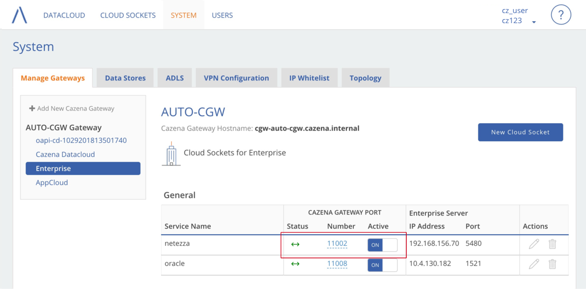
-
From the machine that is running the gateway, run
cgw-show-ipservices. If the service exists, it should show in the results, with the server IP and port that appears on the list of enterprise gateways (see above).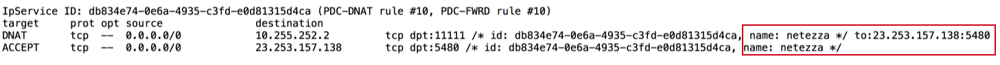
-
To check that the link really has been created: In Hue, select Data Browsers > Sqoop Transfer, the click on Manage Links in the upper right corner. See if the link that you tried to create is on the list.
Create a link for HDFS
- From the New Job screen, click Add a New Link to add a second link.
- Give the connector a name.
- For Connector, select hdfs-connector.
- For HDFS URI, enter
hdfs://nameservice:8020 - Click Save. 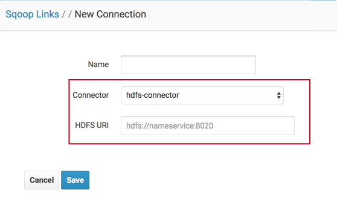
- Back on the New Job screen, select that link as the To link.
Step 3: Create and Run the Sqoop Job
Step 1 (Hue)
| Select the To and From links (described in the previous step), then click Next. | 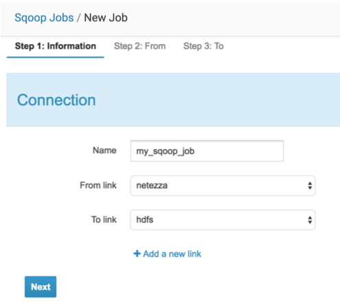 |
Step 2 (Hue)
| For Table name, enter the name of the table you want to import from your database. For Partition Column (optional): Enter the name of the partition column, if applicable. The partition column is often the table’s primary key, but it can also be any column of your choosing. Click Next. |
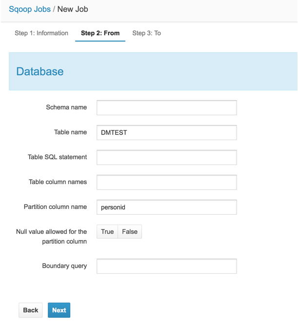 |
Step 3 (Hue)
| For Output Format, select TEXT_FILE. For Compression Format, select NONE. For Output directory, enter /user/sqoop2/postgresLeave all other fields blank. Click Save and Run. |
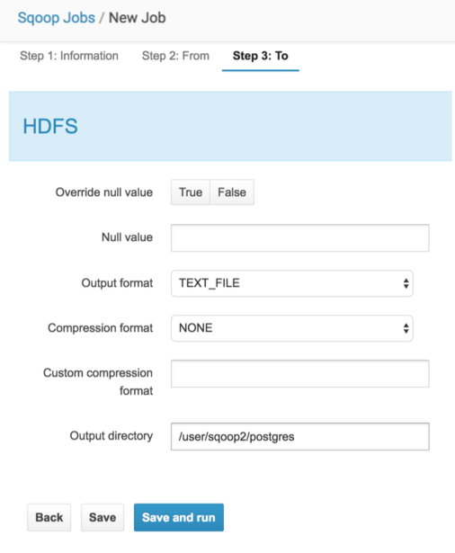 |
Move to HDFS Using WebHDFS
This example describes how to move a file (nycflights.dsv) into a directory (user/my_username/my_directory) on your Cazena data lake.
Step 1: Get the IP address and Port for WebHDFS
- Select the Cloud Sockets tab. On the left side of the screen, under APIs , select WebHDFS.
- Copy the Cazena DNS address and port.
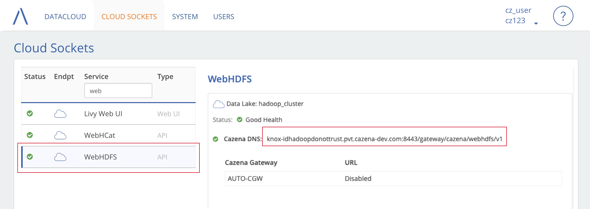
Step 2: Get the HDFS Location Where You Want to Move Data
From a terminal window, run the following command to determine the location in HDFS where the data will go:
curl -i -k -u <USERNAME>:<PASSWORD> -X PUT "http://<IP-ADDRESS>:<PORT>/gateway/cazena/webhdfs/v1/<DIRECTORY>/<FILENAME>?op=CREATE"
Where:
<USERNAME> and <PASSWORD> are your username and password for the Cazena console
<IP-ADDRESS> and <PORT> are the server and port from the Cloud Socket (HDFS-REST-API)
<DIRECTORY> is the path to the HDFS directory.
Note: The full path to the directory will always begin with user/<username> . You can sign into Hue to see your directory structure.
<FILENAME> is the name of the file. You must include the filename, and it must match the name of the source file.
Example: To move the file nycflights.dsv to the directory /user/my_username/my_directory , you would start with a command like this:
curl -i -k -u my_username:mypassword -X PUT "http://1.2.3.4:11979/gateway/cazena/webhdfs/v1/user/my_username/my_directory/nycflights.dsv?op=CREATE”
The system will return several values, including the HDFS location, e.g.,
Location: http://1.2.3.4:11979/gateway/cazena/webhdfs/data/v1/webhdfs/v1/user/my_username/my_directory/nycflights.dsv?_=AAAACAAAABAAAAEAzrO5cJpwRtgS_VvH60NYdTGHgRY5YOcHT7bHdAPh5uADDoHlpHWuA5BkU7D_IwOWGQa7FSBj12Q0vwQ3LmYAx01AICxQ3ZCyY1TD29nHJdhMjSFVcdhDS5POisjHIS8gEeWgIWMdYOP51xi0HDjjO0iddgpnnCDiZ1NYqEZxhpuVtw9Hu_QX3IAYtuN11wP9AGqWccrDI6EiOaWkuoDMV_wiFySp02SGsFC2VpqjVgLxuF7y_TcjTfz_n5V6-ATadpKijxatihot_XGFoNwMUAnV_vMwYqOvYnEt0k6QegqbmTOUXUMpE2ocZ4VlXK13toqQKmDUS_kOFBrrqwaClA0wRpw2K1Tf4jPsOnjGQ_6PTPNtwYaGXg
Step 3: Move Data to HDFS
Use the location from the previous step in the command that will move the data into HDFS:
curl -i -k -u <USERNAME>:<PASSWORD> -X PUT -T <FILENAME> "<LOCATION>"
<USERNAME> and <PASSWORD> are your username and password for the Cazena console
<FILENAME> is the file containing the data that you want to move. This might include the path to the file. The name of the actual file must be the same as the name that you used in the previous step.
<LOCATION> is the location from the previous step
Example: To move the file nycflights.dsv into the location from the previous step, you would use a command like this:
curl -i -k -u my_username:mypassword -X PUT -T nycflights.dsv "http://1.2.3.4:11979/gateway/cazena/webhdfs/data/v1/webhdfs/v1/user/my_username/my_directory/nycflights.dsv?_=AAAACAAAABAAAAEAzrO5cJpwRtgS_VvH60NYdTGHgRY5YOcHT7bHdAPh5uADDoHlpHWuA5BkU7D_IwOWGQa7FSBj12Q0vwQ3LmYAx01AICxQ3ZCyY1TD29nHJdhMjSFVcdhDS5POisjHIS8gEeWgIWMdYOP51xi0HDjjO0iddgpnnCDiZ1NYqEZxhpuVtw9Hu_QX3IAYtuN11wP9AGqWccrDI6EiOaWkuoDMV_wiFySp02SGsFC2VpqjVgLxuF7y_TcjTfz_n5V6-ATadpKijxatihot_XGFoNwMUAnV_vMwYqOvYnEt0k6QegqbmTOUXUMpE2ocZ4VlXK13toqQKmDUS_kOFBrrqwaClA0wRpw2K1Tf4jPsOnjGQ_6PTPNtwYaGXg"
The system response will include:
HTTP/1.1 201 Created
To verify that the data has been moved, you can sign into Hue and navigate to the file.
Move to ADLS Using WebHDFS
If your datacloud runs on Microsoft Azure infrastructure, you may have direct access to a shared folder in the object data store. From the Cazena console, you can view and copy information needed to move data into ADLS using WebHDFS.
ADLS Account Information
When your datacloud is provisioned, Cazena sets up a dedicated Customer Access User that has access to the Azure object data store. When you move data, use the username and password for the Customer Access User (i.e., not your own username and password).
- From the System tab, select ADLS.
- Your account data is displayed at the top of the page, including:
- Tenant ID
- Client ID
- Instance name
- ADLS Base URL (used in commands such as creating tables and databases)
- Customer Access username
About ADLS Customer Access User
On the System > ADLS page, there is a link for changing the password of the Customer Access user. To change the password, you will need to know the existing password, which is initially set by Cazena Support. If you don’t know the password, contact support@cazena.com.
If you are signed in to your own Microsoft account on your browser when you click the Change Password link, you may go to a Microsoft screen for changing your own password, rather than the password for the Customer Access user. To avoid this situation, either sign out of your own Microsoft account, or open the link in an incognito browser window.
ADLS Commands
The Cazena console displays the information needed to move data into ADLS using WebHDFS. Your account data is incorporated into a series of commands that you can use to set environment variables, obtain and refresh access tokens, and access the ADLS object store.
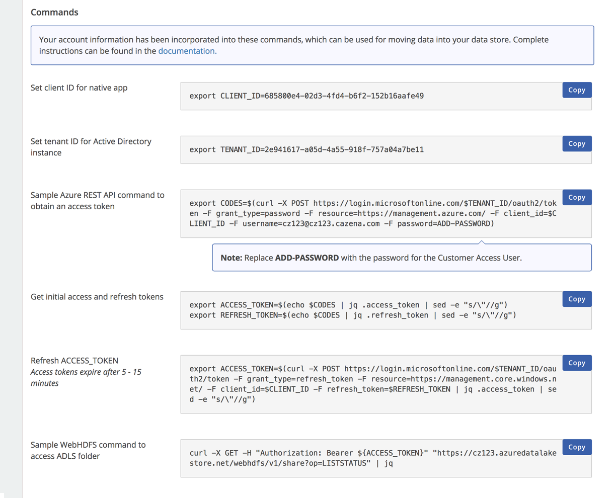
This example will show how to move data from your local file system into the ADLS shared folder.
Step 1: Set Client and Tenant IDs
- In a terminal window, navigate to the directory that contains the data to be moved.
- From the Cazena console, select the System tab, then ADLS.
-
Copy each of the first two commands and paste them into the terminal window. These commands will set the environment variables CLIENT_ID and TENANT_ID.
export CLIENT_ID=685800e4-02d3-4fd4-b6f2-152b16aafe49 export TENANT_ID=2e941617-a05d-4a55-918f-757a04a7be11
Step 2: Set Access and Refresh Tokens
-
To set the CODES environment variable, copy the third command onto your clipboard and paste it into a text editor. Replace ADD-PASSWORD with the password for the Customer Access user.
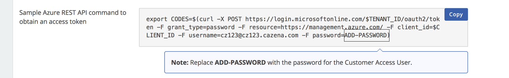
-
Paste the command containing the password into the terminal window.
export CODES=$(curl -X POST https://login.microsoftonline.com/$TENANT_ID/oauth2/token -F grant_type=password -F resource=https://management.azure.com/ -F client_id=$CLIENT_ID -F username=cz123@cz123.cazena.com -F password=your-password)The system will respond with something like the following:
% Total % Received % Xferd Average Speed Time Time Time Current Dload Upload Total Spent Left Speed 100 3080 100 2434 100 646 6396 1697 --:--:-- --:--:-- --:--:-- 6405 -
To check whether the access code was generated, use
echo $CODES.echo $CODES {"token_type":"Bearer","scope":"user_impersonation","expires_in":"3600","ext_expires_in":"0","expires_on":"1503072287","not_before":"1503068387","resource":"https://management.azure.com/","access_token":"eyJ etc... -
Copy and paste the commands next to Get initial access and refresh tokens. These commands will set the ACCESS_TOKEN and REFRESH_TOKEN variables that will be used in subsequent commands.
export ACCESS_TOKEN=$(echo $CODES | jq .access_token | sed -e "s/\"//g") export REFRESH_TOKEN=$(echo $CODES | jq .refresh_token | sed -e "s/\"//g")
Refresh Access Codes
-
Access codes will expire after 5 minutes. To refresh the access code, use the next command next to Refresh ACCESS_TOKEN.
export ACCESS_TOKEN=$(curl -X POST https://login.microsoftonline.com/$TENANT_ID/oauth2/token -F grant_type=refresh_token -F resource=https://management.core.windows.net/ -F client_id=$CLIENT_ID -F refresh_token=$REFRESH_TOKEN | jq .access_token | sed -e "s/\"//g")
Step 3: Move Data into the ADLS folder
-
The final command on the System > ADLS page will access the ADLS folder.
curl -X GET -H "Authorization: Bearer ${ACCESS_TOKEN}" "https://cz123.azuredatalakestore.net/webhdfs/v1/share?op=LISTSTATUS" | jq
If the folder is empty, the system will respond with something like this:
% Total % Received % Xferd Average Speed Time Time Time Current
Dload Upload Total Spent Left Speed
100 34 100 34 0 0 39 0 --:--:-- --:--:-- --:--:-- 39
{
"FileStatuses": {
"FileStatus": []
}
}
-
Set a variable with the name of the file, for example:
export FILE_TO_USE=nycflights.dsv -
Use a command such as the following to move the file:
curl -i -X PUT -L -T $FILE_TO_USE -H "Authorization: Bearer ${ACCESS_TOKEN}" "https://cz123.azuredatalakestore.net/webhdfs/v1/share/${FILE_TO_USE}?op=CREATE" -
After the movement is complete, you can re-use the command to access the ADLS folder to see the data that you moved:
curl -X GET -H "Authorization: Bearer ${ACCESS_TOKEN}" "https://cz123.azuredatalakestore.net/webhdfs/v1/share?op=LISTSTATUS" | jq
% Total % Received % Xferd Average Speed Time Time Time Current
Dload Upload Total Spent Left Speed
100 305 100 305 0 0 457 0 --:--:-- --:--:-- --:--:-- 457
{
"FileStatuses": {
"FileStatus": [
{
"length": 1591,
"pathSuffix": "dmm.log.snippet",
"type": "FILE",
"blockSize": 268435456,
"accessTime": 1503061325322,
"modificationTime": 1503061325528,
"replication": 1,
"permission": "770",
"owner": "7b8783fe-e118-4632-91c4-3049cb85e28a",
"group": "bae379d5-e7f6-4c9f-aa89-37d9f71a7744"
}
]
}
}
Alternately, you could use the ADLS Data Explorer to see the file that you moved.
Monitor System
Cloud Sockets
The Cloud Sockets tab shows the status (Good Health, Warning or Critical) of preconfigured services such as RStudio and Hue.
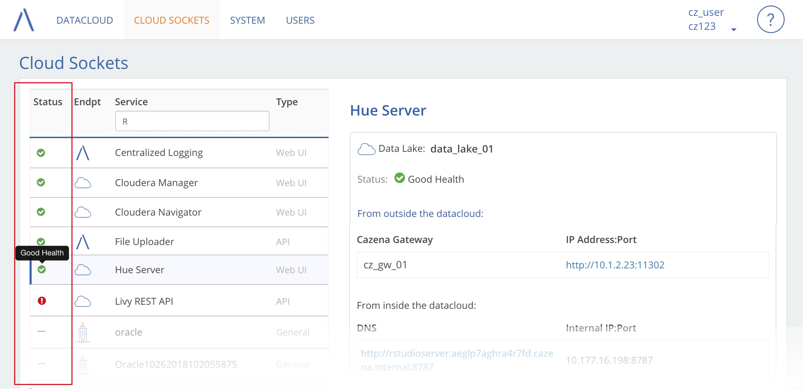
If you are connecting to a service via a Cazena Gateway, you can also look on the System > Manage Gateways tab to see the status of a Cazena gateway port for the service that you want.
Dashboard
-
From the Datacloud tab, click on the name of the data lake or data mart that you want to monitor.
Note that dashboard metrics are not available for Kafka clusters.
- Select the Dashboard tab.
- By default, the Dashboard tab shows charts for the past hour. You can select a different timeframe at the top of the screen.
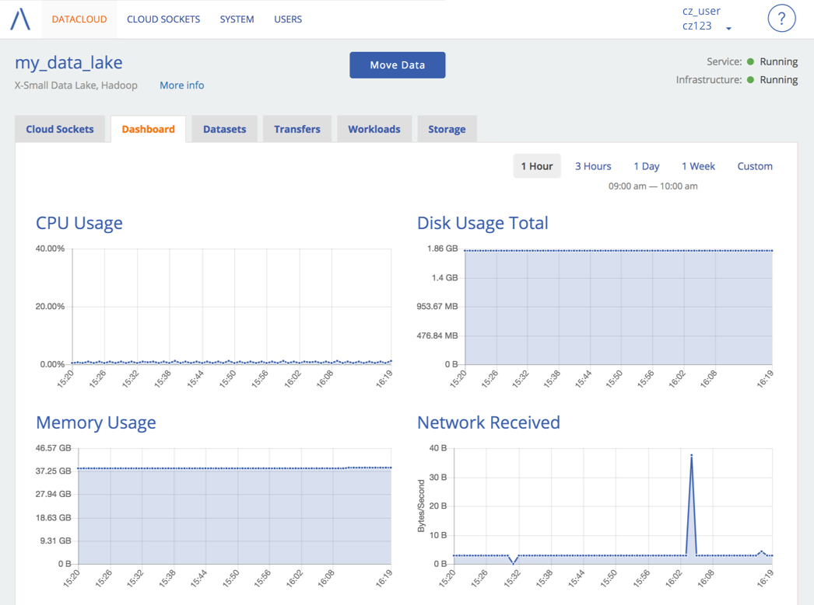
Metrics for Data Lakes
For data lakes, the dashboard displays graphs for these metrics over the selected timeframe:
- CPU usage
- Disk usage over the selected timeframe
- Memory usage
- Network received
Metrics for Data Marts
For data marts, the dashboard displays graphs for these metrics over the selected timeframe:
- CPU usage
- Disk usage
- Read and write throughput
- This includes data going over the network to be imported to or exported from the cloud in a data movement operation as well as data being read from the cloud (For example: by BI tools for analytic reporting or by an enterprise FTP/SFTP export request.
- Network received and transmitted
- Read and write latency
- Read and write IOPS
- Number of database connections
- Health status (healthy or unhealthy)
- Maintenance mode (off or on)
Support
To contact Cazena support:
Phone:
US +1 (844) 781-2986
UK +44 808 164 1104
Web: https://support.cazena.com
Email: support@cazena.com